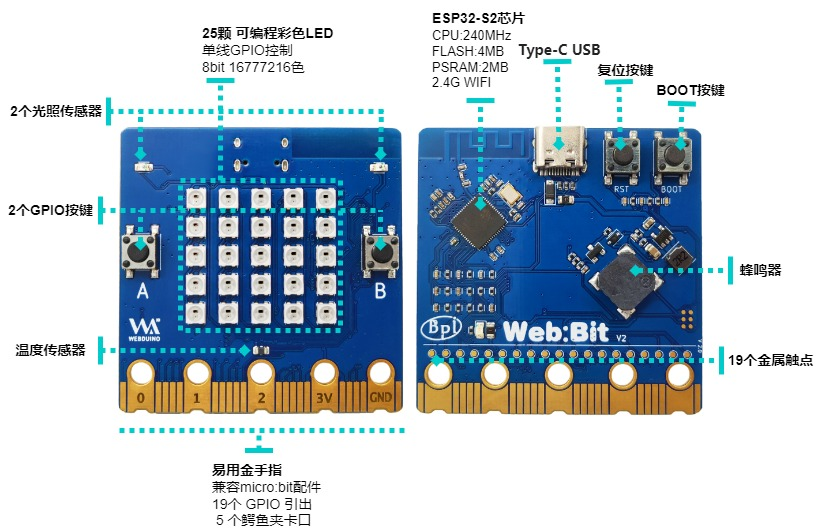
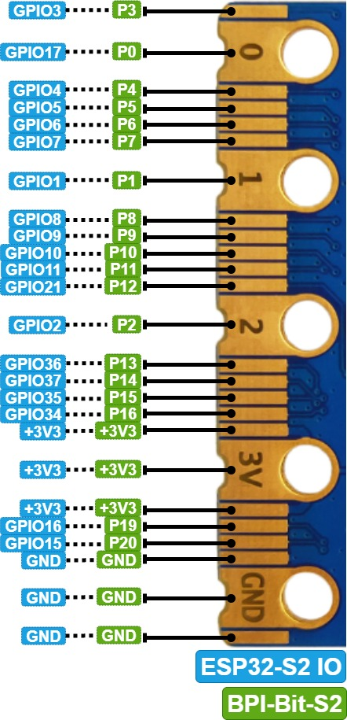

【 开发板介绍 】
2023-11-01
BPI-Bit-S2 开发板 是 BPI-Bit 的后继型号，继承了大部分硬件功能。
IO与micro:bit兼容，可以使用大部分micro:bit的周边配件。
支持 Webduino, Arduino, MicroPython & CircuitPython 编程环境 ，适合应用于STEAM教育领域。
关键特性
- ESP32-S2
- 25颗全彩LED灯
- 1个温度传感器
- 1个蜂鸣器
- 2个光敏传感器
- 正面两个背面一个可编程按键
- Type-C USB接口
- 外形尺寸 5x5cm
- 金手指IO定义与micro:bit完全兼容
硬件
示意图

硬件规格
| Features | Specs |
|---|---|
| MCU | ESP32-S2FN4R2，Xtensa® 32 bit LX7 Single-Core Processer |
| Frequency | 240MHz MAX |
| operating temperature | -40℃~+85℃ |
| ROM | 128 KB |
| SRAM | 320 KB |
| FLASH ROM | 4 MB |
| PSRAM | 2 MB |
| WIFI | IEEE 802.11 b/g/n ，2.4Ghz |
| GPIO | 19 available GPIO pins have been introduced |
| Peripheral functions | ADC,TOUCH,PWM,SPI,I2C,I2S,Pulse counter, RMT,TWAI® Controller,SD/MMC,LCD_CAMERA |
| External crystal | 40Mhz |
| Buzzer | 8.5x8.5mm buzzer |
| LED | 25 WS2812 rgb LED, single line GPIO control; 1 monochrome LED, controlled by GPIO0 |
| Photosensitive sensor | 2 photosensitive sensor |
| Thermistor sensor | 1 thermistor sensor |
| IO | 19 pins Goldfinger IO,19 pins contacts on the back |
| Key | 2 programmable keys,1 BOOT key,1 Reset key |
| USB | USB Type-C interface，full speed USB OTG,USB-ACM |
| Operating voltage | 3.3V |
| Power | USB Type-C input 5V，or Goldfinger IO input 3.3V power supply |
| Size | 5 * 5 cm |
板载外设GPIO分配及信号类型
| 板载外设 | GPIO分配 | 信号类型 |
|---|---|---|
| 光敏传感器(L) | GPIO 12 | Analog Input |
| 光敏传感器(R) | GPIO 13 | Analog Input |
| 按键 A | GPIO 38 | Digital Input |
| 按键 B | GPIO 33 | Digital Input |
| 按键 BOOT | GPIO 0 | Digital Input |
| 温度传感器 | GPIO 14 | Analog Input |
| 蜂鸣器 | GPIO 17 | PWM(Digital Output) |
| RGB_LED | GPIO 18 | Digital Output |
5*5 全彩LED灯顺序
BPI-Bit-S2 有25颗 WS2812 全彩LED灯, 单GPIO控制. 每颗LED的三原色像素都可以实现 8bit 256级亮度显示，及实现16777216色全彩显示，扫描频率不低于400Hz/s。
| 20 | 15 | 10 | 5 | 0 |
| 21 | 16 | 11 | 6 | 1 |
| 22 | 17 | 12 | 7 | 2 |
| 23 | 18 | 13 | 8 | 3 |
| 24 | 19 | 14 | 9 | 4 |
金手指引脚定义

SPI与I2C预设引脚
| Function | Pin Name | GPIO Num |
|---|---|---|
| SPI_SCK | P13 | GPIO36 |
| SPI_MISO | P14 | GPIO37 |
| SPI_MOSI | P15 | GPIO35 |
| SPI_CS | P16 | GPIO34 |
| I2C_SCL | P19 | GPIO16 |
| I2C_SDA | P20 | GPIO15 |
供电
BPI-Bit-S2支持两种供电方式：
Type-C USB：使用USB线供电，连接电脑USB接口或其他5V USB充电器即可为开发板供电。
金手指：开发板底部金手指包含电源接口，同时具有输入和输出功能，使用3.3V供电，正极接3V3，负极接GND。